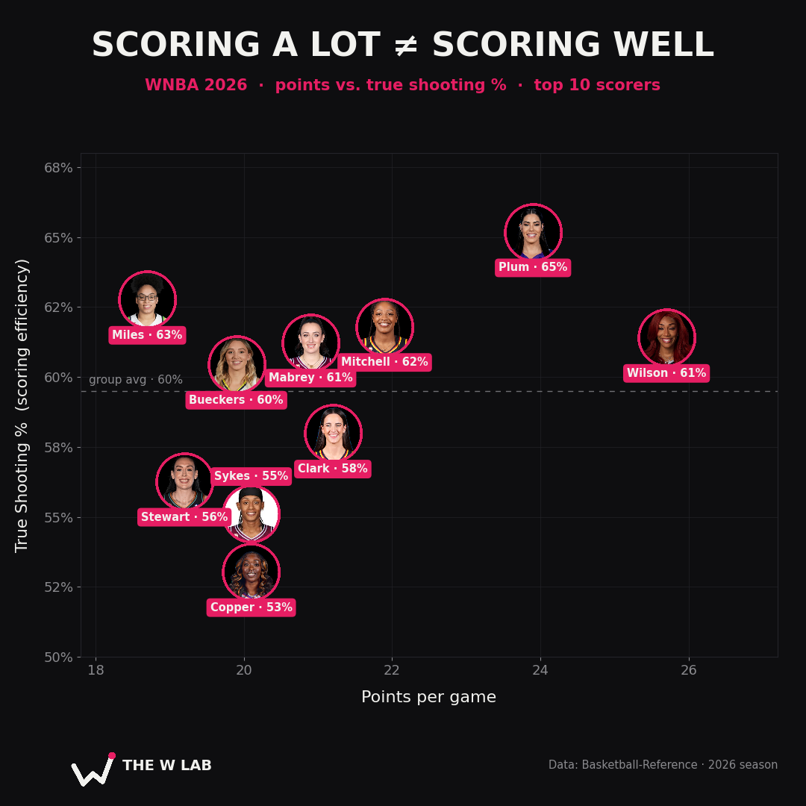

Scoring a Lot Isn't Scoring Well
What True Shooting % reveals about the WNBA's top 10 scorers in 2026 — and what the points totals quietly hide.
Scoring a Lot Isn't Scoring Well
Open any WNBA highlight reel and the framing is always the same: who dropped the most points? It's the number that leads the broadcast, tops the leaderboard, and wins the argument at the bar. But points per game answers a smaller question than people think. It tells you who shoots. It doesn't tell you who scores well.
Those are not the same thing — and the gap between them is where the actual analysis lives.

The metric: True Shooting %
To separate volume from value, you need a number that rewards efficiency, not just attempts. That number is True Shooting % (TS%). It folds two-pointers, three-pointers, and free throws into a single figure: how many points a player produces per scoring possession used.
The beauty of it is that it quietly does the math the box score won't. A three-pointer counts the same as a two on the attempt side, but pays out an extra point — so TS% automatically credits the players who turn volume into points instead of just chucking. A guard living at the free-throw line gets credit too. One number, no excuses.
The league's elite scorers this season cluster around a 60% group average. That line is the honest benchmark. Beat it while carrying a heavy scoring load, and you're not just a bucket — you're an efficient one.
The complete package: Plum and Wilson
Two players occupy the corner everyone wants: high volume and high efficiency.
Kelsey Plum is the standout. Nearly 24 points a night at a 65.2% TS — the best efficiency in this entire group, achieved at the second-highest volume. That combination is rare. Usually, the more a player is asked to create, the more her efficiency bleeds. Plum simply doesn't bleed.
A'ja Wilson is the other half of the answer. She leads the league in scoring at 25.7 a game and still posts a 61.4% TS — comfortably above the group line. Being the single most-used scorer in the WNBA and staying above-average efficient is the closest thing the data has to a flawless season.
And quietly, Kelsey Mitchell belongs in this conversation: 21.6 points on 61.8%. She gets none of the noise and most of the results.
The volume tax — and where it tips into a problem
Here's where it gets critical. Three of the highest-volume scorers in the group sit below the efficiency line, and they tell a more interesting story than the leaderboard does.
Some of that drop is the cost of creation. Caitlin Clark (21.2 points, 58.0% TS) and Brittney Sykes (20.1, 55.1%) take — and make — the hardest shots their offenses generate. When you're the player defenses build their game plan around, a few efficiency points are the toll you pay for keeping the lights on. That's defensible.
Kahleah Copper is the genuine flag. Twenty points a night on a 53.0% TS — the lowest mark in the entire top 10. This isn't the unavoidable tax of a primary creator; it's high usage with thin margins. When a player's scoring volume and her efficiency point in opposite directions this sharply, the points total is flattering her. The film and the math disagree, and the math is usually right.
There's a subtler one, too. Breanna Stewart at 56.2% is low for Stewart — a former MVP shouldn't be dragging behind the group average. The culprit is a cold outside stroke this season pulling an otherwise elite scorer down. It's the kind of dip that a points-per-game chart would never show you, and TS% catches instantly.
The quiet riser
If Copper is the cautionary tale, Olivia Miles is the opposite. Fewer points than the headliners (18.7), but a 62.8% TS that only Plum beats. No volume inflation, no hype cycle — just clean, efficient scoring on real usage. These are the players efficiency metrics exist to surface: the ones the eye test underrates because they don't look like 20-a-night scorers.
What this chart can't tell you
Good analysis names its own limits, so here are TS%'s.
It says nothing about shot difficulty or role. Plum and Clark create a huge share of their own shots off the dribble; an off-ball shooter spotting up for open looks will naturally post a higher TS% on easier attempts. Efficiency and difficulty aren't the same axis.
It ignores everything that isn't scoring — playmaking, the gravity that bends a defense and frees teammates, defense itself. A high-usage star who drags her own efficiency down while lifting four teammates is doing something this chart can't measure.
And it's a snapshot of one season's stretch, not a verdict. Samples this size move. Stewart's number will climb when her three-ball warms; Copper's might too.
None of that cancels the headline. It sharpens it. TS% doesn't replace watching the games — it tells you which games to watch more closely, and which points totals to stop trusting at face value.
The takeaway
Scoring 20 and scoring 20 aren't the same thing. Plum and Wilson prove you can carry an offense without paying an efficiency tax. Copper proves the points column can lie. And Miles proves the most efficient scorer in the room is often the one nobody's talking about.
Volume gets the headline. Value wins the argument.
Methodology: per-game data pulled from Basketball-Reference (2026 WNBA season) and processed in Python (pandas). True Shooting % computed as PTS / (2 × (FGA + 0.44 × FTA)), filtered to players averaging 16+ points per game and ranked by scoring volume. Group average reflects the top 10 scorers shown.
— The W Lab